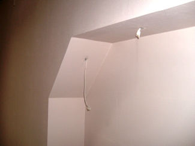

Качественный электромонтаж в Санкт-Петербурге и ленобласти, стаж 12 лет. Частный электрик, недорого и качественно.
Телефон - 8 904 642 08 57. Николай.

Электрификация коттеджа.
Цены посмотрите ниже! Позвоните!
Немного о себе.
Зовут меня Николай, я частный электрик, за плечами которого большой опыт и более сотни удачно завершенных проектов.
Умею не только правильно спланировать и организовать работу, но и экономично подойти к вложению Ваших финансов.
Решаясь на проведение электромонтажных работ в загородном доме, позвоните мне и будьте уверенны, что все услуги будут выполнены на должном профессиональном уровне, подходящем именно Вашему личному запросу!
Использую проверенные стройматериалы и профессиональные инструменты. Работаю открыто и прозрачно, цены доступные и гибкие, возможны скидки. К каждому заказу подхожу индивидуально, учитывая пожелания клиента и особенности месторасположения коттеджа.
Сколько стоит сделать электрификацию коттеджа под ключ?
|
Площадь коттеджа по полу в кв. м. |
Цена в рублях. |
|
Коттедж площадью пола 100 кв. м. |
90000 |
|
140 кв. м. |
130000 |
|
170 |
150000 |
|
200 |
165000 |
|
240 кв. м. |
180000 |
|
270 кв. м. |
210000 |
|
300 кв. м. |
240000 |

Покупатели многих загородных домов часто сталкиваются с проблемой неправильно спланированной системы освещения и неудобного расположения выключателей и электрических розеток. Объясняется это просто: типовые проекты планируются стандартно, без учета пожеланий будущих владельцев. А некоторые застройщики и вовсе не занимаются электромонтажом, оставляя возможность потенциальным хозяевам самим реализовывать собственные схемы. Как быть в таком случае?
Что такое полная электрификация?
И кому доверить выполнение столь серьезного задания?
Ответ один - только профессионалу. И я, как частный электрик, имеющий двадцатилетний опыт работы по специальности и знающий все тонкости своего дела, подтверждаю это. Скажу больше: работы по электрификацию коттеджа имеет ряд особенностей, которые знает не каждый специалист. К тому же, это очень ответственное дело и от квалификации и специальных навыков мастера зависит безопасность, а в некоторых случаях и жизнь владельцев.
Основные этапы электрификации коттеджа:
- Получение разрешения о присоединении к мощностям от организации, в ведомстве которой находится местная электросеть (после этого можно начинать разработку плана электрификации);
- Разработка проекта;
- Этап согласования проекта с соответствующими органами. После этого все работы должны выполняться строго по схеме, без внесения каких-либо изменений;
- Проведение электромонтажа. Проводится установка электрощитов, подключается электрическая линия, выполняется монтаж внешнего освещения и основный элементов внутренней сети. На этом этапе выполняется прокладка кабельных линий, необходимых для снабжения электроэнергией всего коттеджа;
- Этап испытательных или пуско-наладочных работ, по окончании которых составляется технический отчет о проведении электрификация коттеджа;
- Завершающий этап. Проводится вызов инспектора контролирующих органов, и составляется акт о приеме электросети и ее соответствии технике безопасности. Если все работы выполнены качественно и в соответствии с проектом, выполняется опечатывание счетчика и дается разрешение на его использование.
Поскольку качественная электрификация коттеджа во много зависит от проектирования, отдельно хочется сказать и об этом.
Главные задачи, которые решаются при проектировании:
1. Обеспечение безопасного использования электроэнергии, изготовление проектной документации: расчет сечения проводников, проектирование заземления, установка защитно-коммутационного оборудования. Все это даст возможность безопасного пользования.
2. Рациональное использование материалов. Владелец, который решил сделать электрификацию своего дома в соответствии с разработанным планом, будет знать наперед величину затрат на приобретение электроустановочных элементов, кабельной продукции, а также оплату услуг мастера. Кроме того, можно составить такую смету и по вложениям на электрификацию дома. Это позволит сэкономить средства без нанесения ущерба качеству электроснабжения.
3. План работ. Электромонтаж выполняется, обычно, на последних стадиях строительства, однако, кое-что необходимо делать на начальных этапах. К примеру, контур заземления (некоторые элементы) укладывается еще до заливки фундамента.
Важно помнить, что долговечное, безопасное и надежное электроснабжение можно организовать только на основании предварительного проектирования!
Электрификация коттеджа выполняется двумя способами: открытым (наружным) и скрытым. Выбор зависит от типа стен и личных пожеланий заказчика. Например, для домов из пеноблока больше подойдет скрытая проводка, а вот для деревянных домов – наружная. Также необходимо учесть, что выбирая тип проводки нужно ориентироваться не только на эстетичный вид и дизайн, но и на простоту и доступность ремонта.
И напоследок, несколько советов владельцам загородных домов:
- открытый тип проводки является самым дешевым, однако, следует помнить, что прокладка кабелей по сгораемым материалам согласно СНИПам запрещена; -распределительные коробки должны быть легкодоступны для обслуживания и осмотра;
- планировать расположение розеток и выключателей в деревянном доме необходимо более тщательно, поскольку перенос Электра гнезд в нем более сложный, нежели в каменном;
- расходы на оборудование можно значительно снизить, если применить радиоуправляемые выключатели;
- особенно осторожно необходимо проводить электромонтажные работы в деревянном доме, если строительный материал недостаточно просушен.
Вот основные моменты проведения электрификации коттеджа, которые необходимо знать.
 Поменять проводку в квартире.
Поменять проводку в квартире. Сколько будут стоить материалы.
Карта сайта.
Замена электропроводки в панельном доме.
Расценки на электропроводку квартир.
Замена проводки в хрущевке.
Электромонтаж в частном доме.
Электрика в загородном доме.
Сколько стоит замена электропроводки в двухкомнатной квартире?.
Сколько стоит проложить проводку в 3 ком квартире?
Сколько стоит проложить проводку в четырех комнатной квартире?
Сколько стоит сделать внутреннюю проводку?.
Стоимость штробление стен.
Установка люстр и светильников.
Замена электропроводки в панельном доме.
Электромонтаж проводов в бане.
Электрика в загородном доме